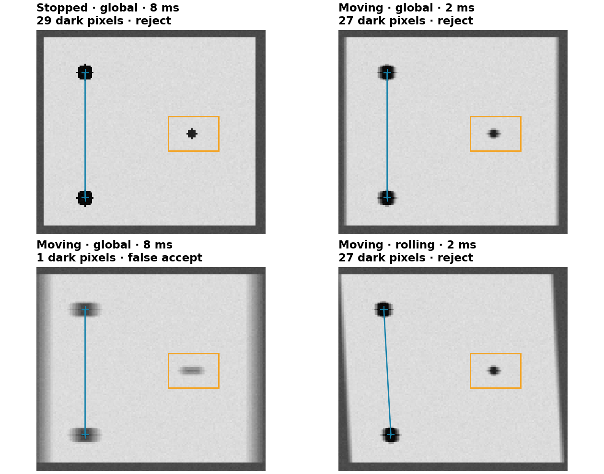

Test machine vision at conveyor speed
A stationary sample passes inspection. At production speed the same camera can miss a defect or shift two reference marks by different amounts. Recreate both failures and test the image timing before changing the robot pick.
Calculate how far the target moves during exposure
At 400 mm/s and a local image scale of 4 pixels per mm, the image moves at 1,600 pixels/s. It travels 3.2 px during a 2 ms exposure and 12.8 px during 8 ms. That travel is the ideal horizontal smear distance for each feature. If a specific feature must smear by at most 2 px, use an exposure of at most 1.25 ms at the same speed and scale. Check brightness and sensor noise at that exposure.
The global-shutter model exposes all rows together. The rolling model has a 35 µs step between adjacent rows’ exposure midpoints. The two reference marks lie 80 rows apart. Their exposures are separated by 2.8 ms, so the predicted horizontal displacement difference is 1.12 mm. Reducing the per-row exposure reduces blur. The interval between rows still gives shear when the target moves. Use the actual camera’s shutter and readout documentation. Basler electronic shutter types and row timing.
Run the same inspection on the four image sets
Download check_exposure.py. Use Python 3 and its OpenCV and NumPy packages. The verification used OpenCV 4.6.0 on Ubuntu 24.04. The script writes a representative image per condition and a CSV of all trials. Give it a new directory name for the images. The synthetic images use fixed brightness across exposure conditions to isolate motion effects, small seeded noise and the same twelve object variations in every comparison.
sudo apt install python3-opencv python3-numpy
python3 check_exposure.py example-images > readings.csvFor each image the detector counts pixels below intensity 120 in the orange region and rejects at five or more. A separate weighted centre calculation tracks each dark reference dot. The exercise expects all six clean coupons accepted, all six defect coupons rejected, and at most 0.30 mm measured difference in the estimated horizontal positions of the two reference dots. Observed 48 measurement rows.

| Capture | Predicted smear | Missed defects out of six | Max reference difference | Model outcome |
|---|---|---|---|---|
| Stationary, global, 8 ms | 0 px | 0 | 0.002 mm | Both criteria pass. |
| Moving, global, 2 ms | 3.2 px | 0 | 0.004 mm | Both criteria pass. |
| Moving, global, 8 ms | 12.8 px | 6 | 0.011 mm | Defect inspection misses the criterion. |
| Moving, rolling, 2 ms | 3.2 px per row | 0 | 1.123 mm | Reference geometry misses the criterion. |
All four conditions accepted the six clean coupons. In the long moving global case the defect’s dark-pixel count fell from 29 while still to zero or one. In the short rolling case the classifier passed while the references failed. A model can find the requested feature and still supply a misleading coordinate to the robot.
Check which timestamp belongs to the coordinate
At constant motion under a symmetric global exposure, a well-tracked feature’s centroid corresponds approximately to the exposure midpoint. If software uses the exposure end instead, an 8 ms exposure adds a 4 ms offset, or 1.6 mm at 400 mm/s. Trigger, exposure, end of readout, arrival and callback time can all differ. In a rolling camera record which row or region the timestamp represents.
- Repeat at the fastest expected belt speed, with exposure and lighting logged. Include both a geometry reference and known defect samples.
- Use held-out physical samples across variation in materials and orientation before accepting a recipe. The twelve repeated synthetic coupons compare capture conditions. They provide no field defect rate.
- Preserve exposure and trigger settings, camera revision, image scale, sample identities and the encoder-count pairing in the production trial. Use a separate acceptance decision for detectability and pose error.